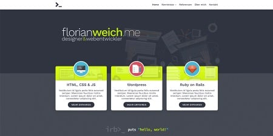
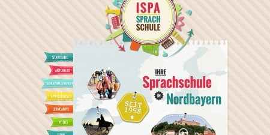
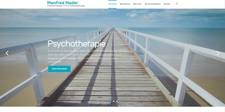

-

Dienstleistungs-Portal
Auftrag123.de
Auftrag123.de ist ein Vergleichsportal für Dienstleistungen. Zwei Studenten gründeten diese Webseite 2015, derzeit befindet sich das Portal im geschlossenen Beta-Test. Ruby on Rails, Heroku und Amazon Web Services sorgen für die nötige Power und Skalierbarkeit der Web-App. Im Hinblick auf die spätere Erweiterung auf mobile Apps kommen uns das integrierte RESTful Routing von Rails außerdem sehr entgegen.
-
Online-Shop
Fadenkäfer
Ein Online-Shop mit umfangreichen Funktionen und Zukunftssicherheit sollte es sein. Für das Label Fadenkäfer habe ich daher ein WooCommerce-System auf Wordpress-Basis aufgesetzt. Kundendaten wurden aus zwei ehemaligen Shop-Systemen migriert.
-


Homepage
florianweich.me
Meine eigene Webseite kommt ganz ohne CMS und dynamische Inhalte aus. Doch dank Jekyll, einem populären Static Site Generator, muss ich auf Templates, Variablen, Collections und Co. nicht verzichten. Das Design entstand in Photoshop, geschrieben wurde die Seite im Code Editor Atom, verarbeitet wurden Assets und Templates von Jekyll und Gulp.
-

Homepage
ISPA Sprachschule
Für die ISPA Sprachschule aus Kulmbach entstand eine neue bunte und belebte Homepage. Die vielfältigen Aktivitäten und internationalen Angebote aus den Bereichen Schüleraustausch, Sprachreisen oder Lerncamps wurden durch ein modernes und peppiges Design untermalt. Kleine, aber feine CSS-Animationen verleihen der Webseite das gewisse Etwas.
-
Homepage
Mein Lebensstein
Im Rahmen der Landesgartenschau 2016 werden die “Lebenssteine” zum ersten Mal einem großen Publikum vorgestellt. Mit einer eigenen Webseite will “Mein Lebensstein” die Idee weiter promoten und den Weg für viele weitere kreative Umsetzungen ebnen. Gestaltet in Photoshop, geschrieben im Code Editor Sublime und verarbeitet von CodeKit.
-

Homepage
Manfred Mader - Psychotherapie (HPG) & Naturheilkunde
Für den Psychotherapeuten Manfred Mader aus Hummeltal sollte es eine moderne und helle Seite mit einer gewissen Portion “Pfiff” sein. Neben der Nutzung eines modernen Wordpress-Themes wurde außerdem das Logo einem Redesign unterzogen.
-
App iOS, macOS
Quadranto
Das Eisenhower-Prinzip für iPhone und den Mac. Das war meine allererste App, die ich 2 Jahre lang über den App Store weltweit vertrieben habe. Mit iCloud-Synchronisierung, Erinnerungen und verschiedenen Projekt-Ansichten konnte man seine Aufgaben nach Wichtigkeit und Dringlichkeit sortieren. Entwickelt in Xcode für iOS und macOS in Objective-C.
-
Digital Signage App (tvOS)
SIGMONDO
Nach den Design- und Konzept-Vorgaben des Bayreuther IT-Dienstleisters TMT entstand diese Digital Signage-App für den Apple TV. Als digitale Werbefläche lassen sich Bilder und Videos auf einem Bildschirm beispielsweise in Restaurants oder im Einzelhandel präsentieren. Die Medien werden per Dropbox-Anbindung auf den Apple TV geladen und dort in einer Endlosschleife - wahlweise im Vollbild - abgespielt. Eigene Texte lassen sich per RSS-Feed einbinden oder auch direkt in der App diktieren. Das lokale Wetter wird mit Hilfe von Ortungsdiensten und Internet-APIs vollautomatisch angezeigt. Und für den persönlichen Touch lassen sich Logo und Hintergrundfarben ebenfalls anpassen.
Auftraggeber: TMT GmbH & Co. KG
-
Blog
Soulfood LowCarberia
Die LowCarb-Königin aus Nürnberg Jasmin Mengele betreibt ihren Blog seit 2011. Mit einem erfolgreichen Online-Shop und entsprechend wachsenden Zugriffszahlen sollte der ehemalige Blogspot-Blog 2015 auf Wordpress umziehen. Seitdem haben wir viele Verbesserungen und Anpassungen an die Bedürfnisse eines Food-Blogs eingebaut.
-
Homepage
Veronica Specht
Die Homepage der Bayreuther Lebensberaterin Veronica Specht. Schlicht und klar strukturiert wurde das Design in Photoshop erstellt und mit Hilfe des CSS-Frameworks Bootstrap realisiert.
sagensie hallo
Sie suchen einen Designer, Web-Entwickler oder Apple Developer? Dann sind Sie bei mir genau richtig!